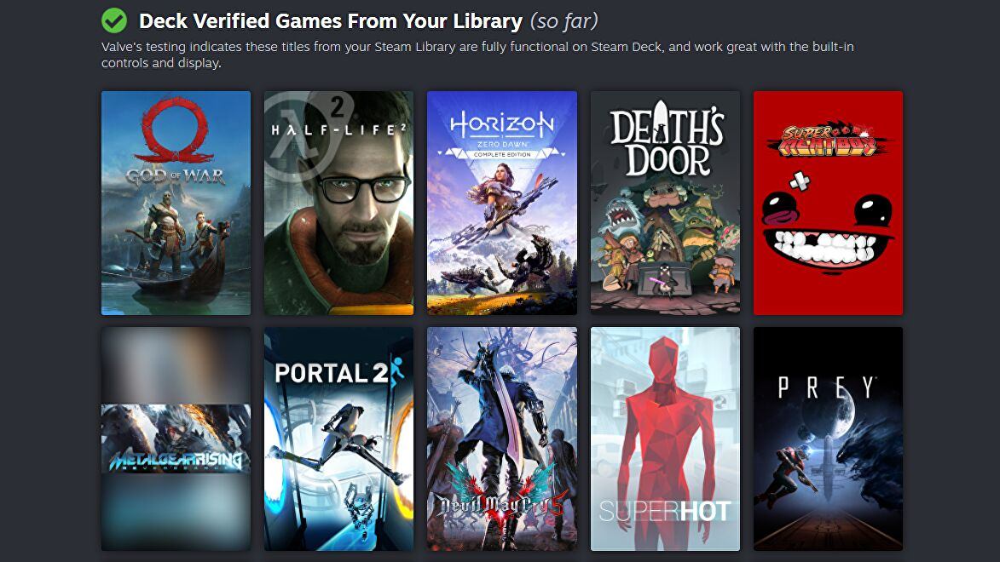

Steam Deck runs a modified Arch Linux operating system called SteamOS v3.3. While SteamOS had been previously developed for Steam Machines using Debian Linux, Valve stated that they wanted to use a rolling upgrade approach for the Deck's system software, a function Debian was not designed for but was a feature of Arch Linux. An application programming interface (API) specific for the Steam Deck is available to game developers, allowing a game to specify certain settings if it is being run on a Steam Deck compared to a normal computer. Within the Steam storefront, developers can populate a special file depot for their game with lower-resolution textures and other reduced elements to allow their game to perform better on the Steam Deck; Steam automatically detects and downloads the appropriate files for the system (whether on a computer or Steam Deck) when the user installs the game.
Linux-native games can be played directly on SteamOS. The SteamOS software includes support for Proton, a compatibility layer that allows most games developed for Windows to be played on the Linux-based SteamOS. According to ProtonDB, a user-run database that compiles information on game compatibility of Steam games within Linux using Proton, several of Steam's more popular game releases were not yet compatible with Proton primarily due to anti-circumvention and anti-cheat controls or digital rights management (DRM). Valve stated they were working with vendors of these middleware solutions to improve Proton support while also encouraging Linux-specific versions to be developed. Epic Games' Easy Anti-Cheat, one of the more popular anti-cheat options for developers, was made available for MacOS and Linux systems in September 2021, which Epic stated that developers could easily transition for the Proton layer. Valve worked with Epic over the end of 2021 to make the transition of Easy Anti-Cheat to Proton simple for developers. Another popular anti-cheat solution, BattlEye, also affirmed their software was ready to work with the Proton layer and only required developers to opt-in to enable it. Valve stated that in testing games otherwise currently available on Linux or compatible with the Proton layer, they had yet to find a game that failed to meet a minimum 30 frames-per-second performance on the handheld, a performance metric comparable to the consoles of the eighth generation. The Proton layer includes support for AMD's upscaling technology FidelityFX Super Resolution (FSR); while Proton also supports Nvidia's DLSS upscaling solution, this was not included in the Deck.
Due to potential confusion on game compatibility, Valve introduced a process in October 2021 by which they brought in additional staff to review games on Steam in order to make sure a game is fully playable on the Steam Deck. Games that are confirmed to be compatible with the Steam Deck, including those with Proton and any middleware DRM solutions, that by default meet minimum performance specifications, are marked as "Verified". Games that may require some user tinkering with settings, such as having to use a system control to bring up the on-screen keyboard, are tagged as "Playable". Another category, "Unsupported", are games that Valve has tested to not be fully compatible with the Steam Deck, such as VR games or games using Windows-specific codecs that have not yet been made compatible with Proton. These ratings are to change over time as both the Steam Deck software improves as well as updates made by developers to games to improve compatibility with the Steam Deck software.
The library page for the Steam client used on the Steam Deck. The additional icons on the top left game image indicate the game is Steam Deck verified. The Steam client on the Deck runs a revised version of the Steam client for desktops. Unlike Steam's Big Picture mode which was designed for use on television screens, which was treated as a separate software branch within Valve, the Deck version of the Steam client stays consistent with the desktop version, adding functions and interface elements to make navigating through Steam easier with controller input, and indicators typical for portable systems such as battery life and wireless connectivity. Valve anticipates phasing out the Big Picture mode in Steam with the Steam Deck user interface in the future. The version of Steam on the Deck otherwise supports all other functions of Steam, including user profiles and friends lists, access to game communities, cloud saving, Steam Workshop support, and the Remote Play feature. Remote Play also allows the Steam Deck to be used as a controller for a game running on a computer, providing additional control options beyond traditional keyboard and mouse or common controller systems. The Steam software on the Deck also supports suspending a game in progress, a feature considered by Valve to be core to the Deck. Otherwise, games that do not take advantage of the Steam Deck API have the handheld's controller input automatically converted for them. For example, the touch-sensitive controllers on the Deck translate input appropriately for games that typically rely on keyboard and mouse controls. Valve added to Steam's current approach to cloud saving with the introduction of Dynamic Cloud Sync in January 2022. Prior cloud functionality only synchronized game saves after the user has exited a game; developers can enable Dynamic Cloud Sync to use cloud saving while the game is running, making this feature more amenable for portable use on the Steam Deck.
Users download games onto the Steam Deck to store on either the internal storage or SD card, each storage device treated as a separate Steam Library for games. This allows SD cards with different Steam Libraries to be swapped in and out. Valve is exploring the ability to pre-load games on an SD card outside of the Deck, such as through a personal computer.
While the Deck was designed for playing Steam-based games, it can be loaded with third-party software, such as alternative storefronts like Epic Games Store, Ubisoft Connect, or Origin. The user can also choose to replace SteamOS with a different operating system entirely, as it supports multi-booting. The device's built-in browser supports Xbox Cloud Gaming, allowing those with Xbox Game Pass subscriptions access to that library of games. Microsoft released a version of Microsoft Edge for Linux which improved support for Xbox Cloud Gaming as well as Google Stadia. Newell stated that Valve would support Microsoft in bringing Xbox Game Pass to Steam and Steam Deck if they want that route.
As part of the Steam Deck's launch, Valve released Aperture Desk Job, a spinoff game in the Portal series, for free on March 1, 2022, available to all Windows and Linux/SteamOS users. The game is designed to demonstrate the various features of the Steam Deck, though is still playable with a controller for other systems.
To assist in developing and testing software for the Steam Deck, Valve released SteamOS Devkit Client and Server under open-source licenses. Drivers for Windows are provided by Valve and AMD, but Valve does not provide support for them.